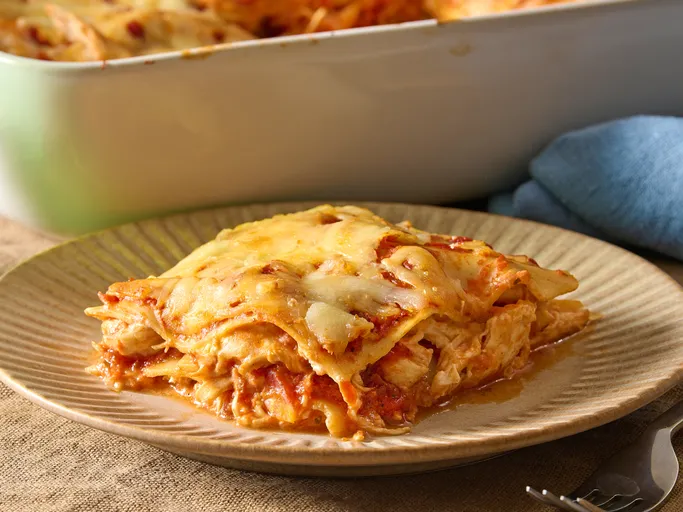
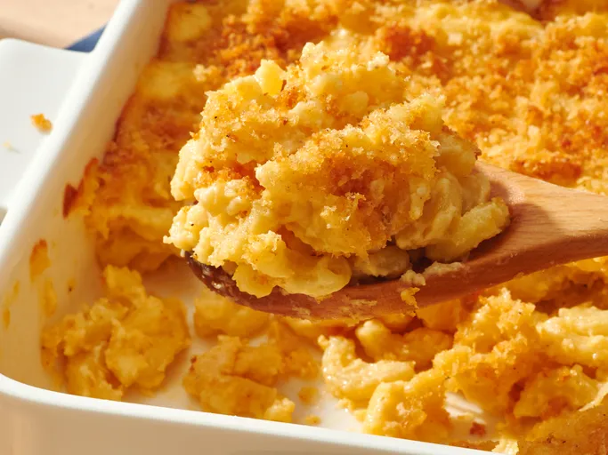
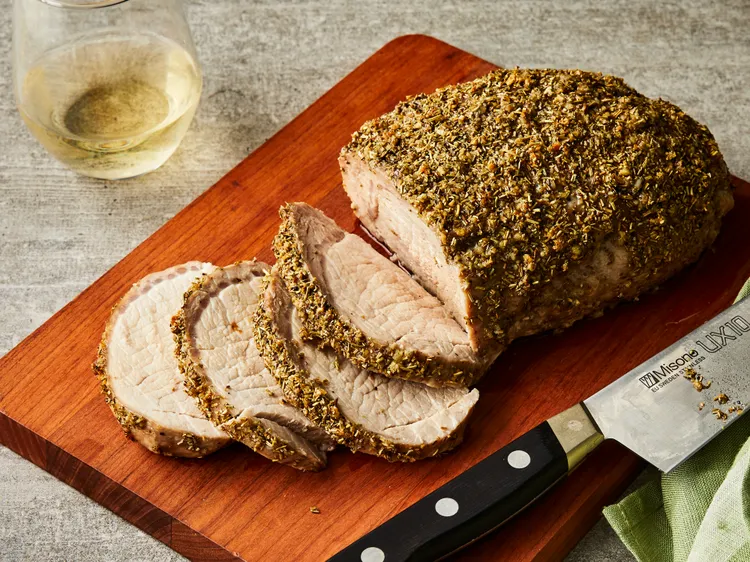

Odin's Recipes is a simple and welcoming recipe website designed for anyone who loves cooking or wants to try something new in the kitchen. It features a variety of tasty recipes, complete with ingredients and easy-to-follow instructions that make cooking more enjoyable and less intimidating. Whether you're a beginner or an experienced home cook, Odin's Recipes helps you discover and create delicious meals with confidence.



| Recipes | Difficulty |
|---|---|
| Mac and Cheese | Easy |
| Creamy Chicken Lasagna | Medium |
| Roasted Pork Loin | Hard |
Have questions or feedback? We'd love to hear from you!
Made by:
Skyler Matthio Calix C. Go
BS Computer Science Student